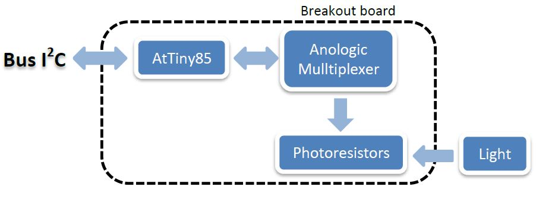
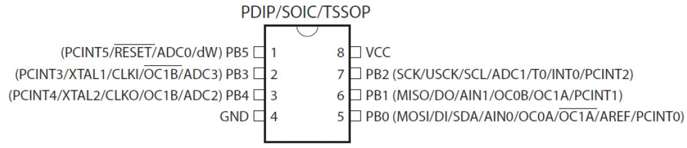
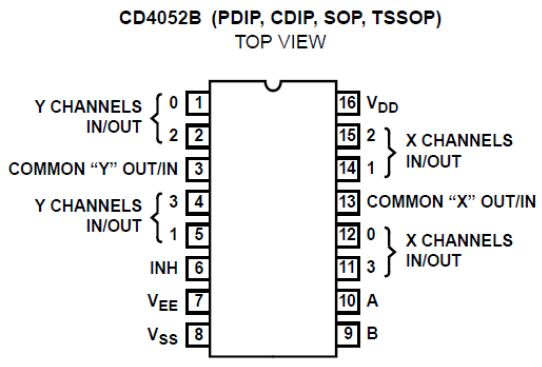
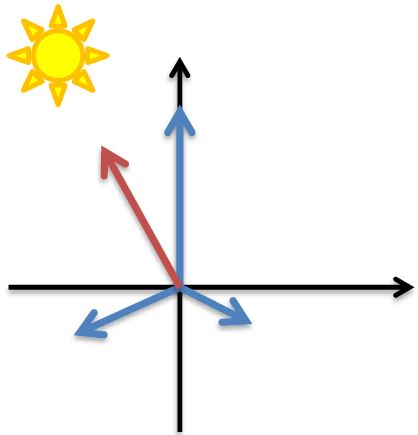
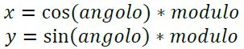
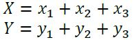
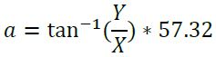
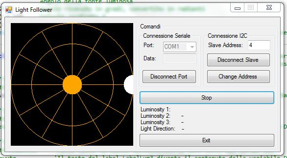
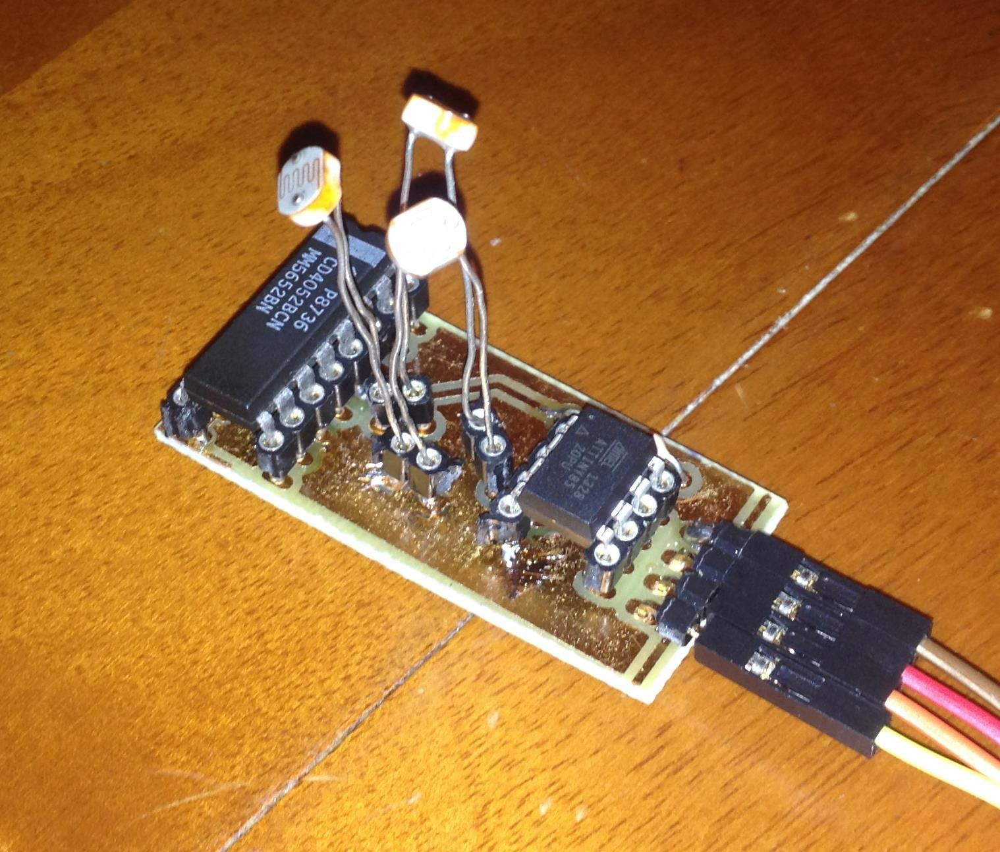

Di seguito si illustra il progetto di una breakout board che permette di interfacciare tre fotoresistori con il mondo esterno utilizzando il protocollo di comunicazione I2C. La funzione principale della scheda e restituire in gradi sessagesimali la direzione della luce.
Un microcontrollore AtTiny85 che gestisce i calcoli e la comunicazione I2C. Viene usato un multiplexer analogico CD4052 per gestire le misure analogiche dei tre fotoresistori. E' stata inoltre sviluppata un interfaccia grafica in grado di svolgere un accurato collaudo del dispositivo, questa permette di monitorare in tempo reale la variazione dei valori dei fotoresistori e attraverso una rappresentazione grafica la posizione nello spazio della fonte luminosa.Lo scopo del progetto e' realizzare una breakout board in grado di acquisire le tensioni di tre fotoresistori, svolgere delle funzioni e restituire tali valori tramite il protocollo di comunicazione I2C.
Il progetto ha le seguenti specifiche:
E' stato usato un microcontrollore AtTiny85 della ATMEL per controllare la scheda di breakout.
Questo microcontrollore e' programmabile nel linguaggio di Arduino e viene usato Arduino stesso per caricarvi il programma. Sono stati usati i pin PB0 e PB2, rispettivamente SDA e SCL, per la connessione I2C. Il pin PB4 contenente un ADC a 10 bit effettua misure analogiche dalleuscita del multiplexer analogico, mentre i pin PB3 e PB1 comandano i 2 ingressi di selezione del multiplexer.
Si devono effettuare tre misure analogiche(una per fotoresistore), anche se l'AtTiny85 possiede tre ADC, uno, il pin PB5, non può essere utilizzato perchè questo pin svolge di norma la funzione di reset, necessaria se si carica il programma tramite Arduino, quindi è stato preso un multiplexer analogico CD4052.
I pin X0, X1 e X2 sono collegati ai fotoresistori, l'uscita comune X è collegata ad una resistenza di pull-up da 10k ed ad l'ADC2(pin PB4) dell'AtTiny85. Tutti gli altri pin sono connessi a massa, escluso VDD che è connesso a 5V.
I fotoresistori sono da 200kΩ, e a turno vengono connessi alla resistenza da 10kΩ per formare un partitore di tensione. Le loro facce sono posizionate a 120° l’una rispetto all’altra.
Questo permette di considerare i fotoresistori come dei vettori in un piano cartesiano.
Questi partono dall’origine ed hanno angolo fisso (ovvero 90°, -30° e -150°) ma modulo variabile da 0 a 255, più la luce è intensa più questo è grande.
Per prima cosa si calcolano le componenti X ed Y dei vettori:  Gli angoli sono espressi in radianti. Dopo di che vengono sommate le componenti: Per ottenere in gradi si svolge l’arcotangente della pendenza (Y/X) del vettore è la si moltiplica per il fattore 57.32.
In questo modo si è ottenuta la pendenza di una retta, quindi si deve svolgere un ultimo passaggio per ricavare in quale quadrante è contenuto il vettore:
// SLAVE AtTiny CODICE
// IVANCICH STEFANO 4EA
// LIGHT FOLLOWER con AtTiny85, MUX analogico e fotoresistori
// Ultima modifica: 03/03/2014
////////////// INCLUSIONE LIBRERIE ////////////////////////
#include <TinyWireS.h>
#include <EEPROM.h>
///////////// DICHIARAZIONE PIN ///////////////////////////
const int A=3; // Pin 2 AtTiny
const int B=1; // Pin 6 AtTiny
/*
B pin 9 IC MUX
A pin 10 IC MUX
INH pin 6 IC MUX
INH | B | A |
0 | 0 | 0 | 0
0 | 0 | 1 | 1
0 | 1 | 0 | 2
0 | 1 | 1 | 3
1 | X | X | none
*/
//////////// DICHIARAZIONE VARIABILI /////////////////////
const int pausa=100; // Tempo di pausa usato tra un operazione e l'altra
const byte memIndirizzo=0x10; // Indirizzo della memoria EEPROM interna che contiene l'indirizzo del dispositivo per la comunicazione I2C
byte indirizzoSlave; // Contiene l'indirizzo del dispositivo per la comunicazione I2C
byte byteRcvd, byteRcvd2; // Conterranno i valori ricevuti dalla comunicazione I2C
int numero; // Conterrà il valore della misura dell'ADC
int luminosita[3]; // Vettore contenente i valori di luminosità di ciascun fotoresistore
int gradi; // Contiene il valore dell'angolo della direzione della fonte luminosa
int j; // Variabile usata come contatore
//////////// IMPOSTAZIONI ////////////////////////////////
void setup() {
pinMode(A, OUTPUT); // Impostato come OUTPUT
pinMode(B, OUTPUT); // Impostato come OUTPUT
indirizzoSlave=EEPROM.read(memIndirizzo); // Legge l'indirizzo di memoria memIndirizzo dove è contenuto l'indirizzo I2C del dispositivo
if(indirizzoSlave==255)indirizzoSlave=63; // Se l'indirizzo è 255 lo porta a 63, che è il massimo valore inviabile
else indirizzoSlave=indirizzoSlave;
TinyWireS.begin(indirizzoSlave); // Attiva il bus I2C, come Slave
TinyWireS.onRequest(richiesta); // In caso di richiesta di dati dal bus I2C viene richiamata la funzione "richiesta"
TinyWireS.onReceive(riceviNumeri); // In caso di ricezione di dati dal bus I2C viene richiamata la funzione "riceviNumeri"
}
/////////// FUNZIONE PRINCIPALE //////////////////////////
void loop() {
// Fotoresistore SX:
digitalWrite(B, LOW); // Imposta i piedini di selezione dell multiplexer a 00
digitalWrite(A, LOW); // quindi verra selezionato l'ingresso 0
luminosita[2]=misura(); // Assegna il valore della luminosita corrispondente
delay(pausa);
// Fotoresistore DAVANTI:
digitalWrite(B, LOW); // Imposta i piedini di selezione dell multiplexer a 10
digitalWrite(A, HIGH); // quindi verra selezionato l'ingresso 2
luminosita[0]=misura(); // Assegna il valore della luminosita corrispondente
delay(pausa);
// Fotoresistore DX:
digitalWrite(B, HIGH); // Imposta i piedini di selezione dell multiplexer a 01
digitalWrite(A, LOW); // quindi verra selezionato l'ingresso 1
luminosita[1]=misura(); // Assegna il valore della luminosita corrispondente
delay(pausa);
// Calcolo componenti X e Y di ogni vettore:
float vetX[3],vetY[3]; // Array che conterranno i valori delle componenti x e y dei vettori associati alle fotoresistenze
vetX[0]=cos(1.57)*luminosita[0]; // 90° fotoresistore davanti
vetX[1]=cos(-0.52)*luminosita[1]; // -30° fotoresistore a destra
vetX[2]=cos(-2.62)*luminosita[2]; // -150° fotoresistore a sininstra
vetY[0]=sin(1.57)*luminosita[0]; // 90° fotoresistore davanti
vetY[1]=sin(-0.52)*luminosita[1]; // -30° fotoresistore a destra
vetY[2]=sin(-2.62)*luminosita[2]; // -150° fotoresistore a sininstra
// Somma dei vettori:
float X=vetX[0]+vetX[1]+vetX[2]; // Somma componenti X
float Y=vetY[0]+vetY[1]+vetY[2]; // Somma componenti Y
// Calcolo gradi
float arco=atan(Y/X)*57.32; // Arcotangente della pendeza del vettore trovato(Y/X) convertita in gradi
if(X>0&&Y>0)gradi=abs(arco-360); // 1° Quadrante
if(X>0&&Y<0)gradi=abs(arco); // 2° Quadrante
if(X<0&&Y>0)gradi=abs(arco-180); // 3° Quadrante
if(X<0&&Y<0)gradi=180-arco; // 4° Quadrante
}
/////////// FUNZIONI BUS I2C //////////////////////////
void richiesta(){ // Funzione richiamata in caso di richiesta di dati dal bus I2C
switch (byteRcvd) { // Seleziona l'opzione corrispondente al 1° valore riceuto in precedenza
case 0x01:
direzioneLuce();
break;
case 0x02:
TinyWireS.send(luminosita[0]); // Invia il valore del 1° fotoresistore(quello davanti)
break;
case 0x03:
TinyWireS.send(luminosita[1]); // Invia il valore del 2° fotoresistore(quello a destra)
break;
case 0x04:
TinyWireS.send(luminosita[2]); // Invia il valore del 3° fotoresistore(quello a sinistra)
break;
}
}
void riceviNumeri(uint8_t howMany){ // Funzione richiamata in caso di ricezione di dati dal bus I2C
if(TinyWireS.available()>1){ // Se c'è piu di un dato nella coda FIFO
byteRcvd = TinyWireS.receive(); // Legge il primo dato
if(byteRcvd==5){ // Se uguale a 5(5° opzione che serve a cambiare l'indirizzo dello slave)
byteRcvd2= TinyWireS.receive(); // Legge il secondo dato nella coda FIFO
EEPROM.write(memIndirizzo,byteRcvd2); //Salva il nuovo indirizzo
tws_delay(10); // Aspetta il tempo necessario a scrivere l'indirizzo
setup(); // Riavvia il dispositivo
}
}
else byteRcvd = TinyWireS.receive(); // Altrimenti legge solamente il dato ricevuto
}
//////////////// FUNZIONI DEL DISPOSITIVO /////////////////////
byte misura(){
numero=analogRead(2); // Misura con l'ADC del pin3 la tensione
numero/=4; // Porta il range di valori da 0-1023 a 0-255
byte valore=(byte)(255-numero); // Nega il valore misurato, in quanto si vuole che all'aumentare dlla luminosita aumenti il valore del numero
return valore; // Restituisce il valore alla funzione chiamante
}
void direzioneLuce(){
// Divisione del numero in 2 byte:
byte vetGradi[2];
if(gradi>255){ // Se il numero è piu grande di 255
vetGradi[1]=(byte)(gradi-255);
vetGradi[0]=(byte)255;
}
else{
vetGradi[1]=(byte)0;
vetGradi[0]=(byte)gradi;
}
// Invio dei 2 byte:
TinyWireS.send(vetGradi[j]);
j++;
if(j==2)j=0;
delay(pausa);
}
Per il collaudo di questa scheda è stato creato un software apposito in Visual Basic e uno sketch per Arduino che comunica tra il PC e la scheda di breakout.
// IVANCICH STEFANO 4EA
// MASTER ARDUINO CODICE
// Ultima modifica: 05/03/2014
////////////// INCLUSIONE LIBRERIE ////////////////////////
#include <Wire.h>
//////////// DICHIARAZIONE VARIABILI /////////////////////
int indirizzoSlave; // indirizzo dello slave
int option=0; // Opzione ricevuta dal serial bus
int NuovoindirizzoSlave=0; // Nuovo indirizzo dello slave
byte slaveConnected=0,completed=1,completed2=0; // Variabili usate come flag
//////////// IMPOSTAZIONI ////////////////////////////////
void setup() {
Wire.begin(); // Attiva il bus I2C; il dispositivo è predisposto come master
Serial.begin(9600); // Attiva il bus seriale per la connessione col pc
}
/////////// FUNZIONE PRINCIPALE //////////////////////////
void loop() {
// Imposta lo slave con cui comunicare:
if(slaveConnected==0&&Serial.available()){ // Se lo slave non è stato connesso e ci sono dati nel serial bus:
indirizzoSlave=Serial.parseInt(); // Legge il dato dal serial bus e lo usa come indirizzo slave
Serial.println("Slave collegato"); // Scrive sul serial bus "Slave collegato"
slaveConnected=1; // Segna il flag slaveConnected a 1-->Slave connesso
completed=0; // Segna il flag completed a 0-->Prima operaziones sullo slave non effettuata
}
// Acquisice l'opzione
if(completed==0&&Serial.available()){ // Se non sono state fatte operazioni sullo slave e ci sono dati nel serial bus:
option = Serial.parseInt();
switch(option){
case 1:
Serial.println(luminosita(1));
break;
case 2:
Serial.println(luminosita(2));
break;
case 3:
Serial.println(luminosita(3));
break;
case 4:
Serial.println(angolo());
break;
case 5: // Cambia indirizzo
completed=1; // Segna la prima operazione come completata
completed2=1; // Segna la seconda operazione come completata
break;
case 6: // Scollego slave
completed=1; // Segna la prima come operazione completata
slaveConnected=0; // Segna lo slave come sconnesso
Serial.println("Slave Scollegato");
indirizzoSlave=Serial.parseInt(); // Usata perche è presente un carattere indesiderato
break;
}
}
// Opzione cambio indirizzo:
if(completed2==1 && Serial.available()){ // Se la seconda operazione è completata
NuovoindirizzoSlave=Serial.parseInt(); // Legge dal serial bus un dato e lo assegna a NuovoindirizzoSlave
cambioIndirizzo(NuovoindirizzoSlave); // Richiama la funzione cambio indirizzo e passa il parametro NuovoindirizzoSlave
Serial.print("Scritto: ");Serial.println(NuovoindirizzoSlave); // Scrive sul serial bus il valore dell'indirizzo scritto sulla eeprom
completed2=0; // Segna la prima operazione come non completata
completed=0; // Segna la seconda operazione come non completata
indirizzoSlave=NuovoindirizzoSlave; // Imposta il nuovo indirizzo dello slave
}
}
//////////////// FUNZIONI DEL DISPOSITIVO /////////////////////
int luminosita(int n){
if(n<1||n>3) return 0; // Se il parametro ricevuto è diverso da 1, 2 o 3 ritorna uno 0
// Imposta l'opzione:
Wire.beginTransmission(indirizzoSlave);
byte opzione=n+1; // Perchè l'opzione 1 è l'angolo
Wire.write(opzione);
Wire.endTransmission(); // Invia l'opzione al bus I2C
// Chiede un byte:
Wire.requestFrom(indirizzoSlave,1);
while(Wire.available()){ // Se c'è almeno un byte nel FIFO esegue il ciclo
return (int)Wire.read(); // Legge il dato dal bus I2C
}
}
int angolo(){
// Imposta l'opzione:
Wire.beginTransmission(indirizzoSlave);
byte opzione=1;
Wire.write(opzione);
Wire.endTransmission();
// Chiede 2 byte:
int a=0,i=0;
Wire.requestFrom(indirizzoSlave,2);
while(Wire.available()){ // Se c'è almeno un byte nel FIFO esegue il ciclo
a+=(int)Wire.read(); // Riceve 2 byte la cui somma da un numero compreso tra 0 e 359
}
return a; // Ritorna l'angolo ricevuto dallo slave
}
void cambioIndirizzo(int address){
Wire.beginTransmission(indirizzoSlave);
Wire.write(5);
Wire.write(address);
Wire.endTransmission(); // Invia l'opzione 5 e il nuvo indirizzo dello slave da impostare al bus I2C
}
Arduino preleva dal serial bus l’indirizzo dello slave a cui si deve connettere e solo successivamente preleva l’opzione scelta dall’utente(1, 2, 3, 4, 5 o 6).
A ciascuno opzione corrisponde una funzione:Il codice scritto in Visual Basic possiede un parte in ambiente grafico ed una in codice vero e proprio.
Public Class Form1
Dim porteDisponibili As Array 'Arrey che conterrà la lista delle porte COM disponibili
Dim disegno As Graphics 'Oggetto che gestira elementi di tipo grafico
Dim DatoRicevuto As String 'Variabile che conterrà la stringa ricevuta dalla comunicazione seriale
Private Sub Form1_Load() Handles MyBase.Load
SerialPort1.Close() 'Chiude la porta seriale se era già aperta
porteDisponibili = IO.Ports.SerialPort.GetPortNames() 'Mette nell'array le porte seriali disponibili
ComboBoxPort.Items.AddRange(porteDisponibili) ' Mette nella ComboBox(lista) le porte seriali disponibili
End Sub
Private Sub disegna() 'Funzione richiamata per rappresentare graficamente la provenienza della fonte luminosa
disegno = Panel1.CreateGraphics() 'All'oggetto disegno assegna come rappresentazione l'oggetto panel1
Panel1.Refresh() 'Cancella il contenuto del panel1 per non appesantire il programma
disegno.FillRectangle(Brushes.Black, 0, 0, 250, 250) 'Disegna sulla classe disegno(panel1) un rettangolo nero pieno che parte dal punto 0,0 e grande 250,250 pixel
disegno.DrawEllipse(Pens.Orange, 0, 0, 250, 250) 'Disegna sulla classe disegno(panel1) una ellisse a forma di cerchio arancione che parte dal punto 0,0 e grande 250,250 pixel
disegno.DrawEllipse(Pens.Orange, 42, 42, 167, 167) 'Disegna sulla classe disegno(panel1) una ellisse a forma di cerchio arancione che parte dal punto 42,42 e grande 167,167 pixel
disegno.DrawLine(Pens.Orange, 125, 250, 125, 0) 'Disegna sulla classe disegno(panel1) una linea di colore arancione, che parte dalle cordinate 125,250(centro basso del cerchio) e va fino alle cordinate 125,0(centro alto del cerchio)
disegno.DrawLine(Pens.Orange, 0, 125, 250, 125) 'Disegna sulla classe disegno(panel1) una linea di colore arancione, che parte dalle cordinate 0,200(centro a sinistra del cerchio) e va fino alle cordinate 250,125(centro a destra del cerchio)
disegno.DrawLine(Pens.Orange, 63, 17, 188, 233) 'Disegna sulla classe disegno(panel1) una linea di colore arancione, che parte dalle cordinate 63,17(150°) e va fino alle cordinate 188,233(330°)
disegno.DrawLine(Pens.Orange, 63, 233, 188, 17) 'Disegna sulla classe disegno(panel1) una linea di colore arancione, che parte dalle cordinate 63,233(210°) e va fino alle cordinate 188,233(30°)
disegno.DrawLine(Pens.Orange, 17, 63, 233, 188) 'Disegna sulla classe disegno(panel1) una linea di colore arancione, che parte dalle cordinate 17,63(120°) e va fino alle cordinate 373,188(300°)
disegno.DrawLine(Pens.Orange, 233, 63, 17, 188) 'Disegna sulla classe disegno(panel1) una linea di colore arancione, che parte dalle cordinate 233,63(60°) e va fino alle cordinate 17,188(230°)
disegno.FillEllipse(Brushes.Orange, 105, 105, 40, 40) 'Disegna sulla classe disegno(panel1) una ellisse piena a forma di cerchio arancione che parte dal punto 105,105(centro del disegno) e grande 40,40 pixel
Dim x, y As Integer 'Variabili utilizzate come cordinate della provenienza della fonte luminosa
Dim angolo As Double 'Angolo della fonte luminosa
angolo = DatoRicevuto / 57.32 'Angolo ricevuto in gradi, convertito in radianti
x = 125 * Math.Cos(angolo) + 125 'Calcola cordinata X
y = 125 * Math.Sin(angolo) + 125 'Calcola cordinata Y
disegno.FillEllipse(Brushes.White, x - 20, y - 20, 40, 40) 'Disegna sulla classe disegno(panel1) una ellisse piena a forma di cerchio bianco che parte dal punto x-20,y-20 e grande 40,40 pixel
End Sub
Private Sub Timer1_Tick() Handles Timer1.Tick 'Funzione eseguita ad ogni intervallo di tempo prestabilito(Timer1.interval)
On Error Resume Next 'Se accadono errori in una istruzione, la salta per evitare che il programma crashi
SerialPort1.WriteLine("1") 'Scrive sulla porta seriale "1"(Opzione 1)
DatoRicevuto = SerialPort1.ReadLine 'Mette nella variabile DatoRicevuto il dato letto dal serial bus
LabelLum1.Text = DatoRicevuto 'Il testo del label LabelLum1 diventa il contenuto della variabile DatoRicevuto
SerialPort1.WriteLine("2") 'Scrive sulla porta seriale "2"(Opzione 2)
DatoRicevuto = SerialPort1.ReadLine 'Mette nella variabile DatoRicevuto il dato letto dal serial bus
LabelLum2.Text = DatoRicevuto 'Il testo del label LabelLum2 diventa il contenuto della variabile DatoRicevuto
SerialPort1.WriteLine("3") 'Scrive sulla porta seriale "3"(Opzione 3)
DatoRicevuto = SerialPort1.ReadLine 'Mette nella variabile DatoRicevuto il dato letto dal serial bus
LabelLum3.Text = DatoRicevuto 'Il testo del label LabelLum3 diventa il contenuto della variabile DatoRicevuto
SerialPort1.WriteLine("4") 'Scrive sulla porta seriale "4"(Opzione 4)
DatoRicevuto = SerialPort1.ReadLine 'Mette nella variabile DatoRicevuto il dato letto dal serial bus
LabelDirection.Text = DatoRicevuto 'Il testo del label LabelDirection diventa il contenuto della variabile DatoRicevuto
disegna() 'Richiama la funzione disegna per rapppresentare graficamente i dati appena ricevuti
End Sub
Private Sub ButtonConnectSerialPort_Click() Handles ButtonConnectSerialPort.Click 'Funzione eseguita quando si clicca sul bottone ButtonConnectSerialPort
On Error Resume Next 'Se accadono errori in una istruzione, la salta per evitare che il programma crashi
If ButtonConnectSerialPort.Text = "Connect Port" Then 'Se il testo del bottone ConnectSerialPort è "Connect Port":
SerialPort1.PortName = ComboBoxPort.Text 'Assegna al portname la porta COM del ComboBoxPort selozionata
SerialPort1.Open() 'Apre la porta seriale
ButtonConnectSerialPort.Text = "Disconnect Port" 'La scritta sul bottone connetti diventa "Disconnect Port"
ComboBoxPort.Enabled = False 'La ComboBoxPort non può essere più selezionata
ButtonConnectSlave.Enabled = True 'Abilita il bottone ConnectSlave
ButtonStart.Text = "Start" 'La scritta sul bottone Start diventa "Start"
Else
SerialPort1.Close() 'Chiude la porta seriale
ButtonConnectSerialPort.Text = "Connect Port" 'La scritta sul bottone connetti diventa "Connect Port"
ComboBoxPort.Enabled = True 'La ComboBoxPort può essere di nuovo selezionata
ButtonConnectSlave.Text = "Connect Slave" 'La scritta sul bottone connetti diventa "Connect Slave"
ButtonConnectSlave.Enabled = False 'Disbilita il bottone ConnectSlave
ButtonStart.Enabled = False 'Disbilita il bottone Start
ButtonStart.Text = "Start" 'La scritta sul bottone Start diventa "Start"
ButtonChangeAddress.Enabled = False 'Disbilita il bottone ChangeAddress
Timer1.Enabled = False 'Disabilita il timer (lo spengo)
End If
End Sub
Private Sub ButtonConnectSlave_Click() Handles ButtonConnectSlave.Click 'Funzione eseguita quando si clicca sul bottone ButtonConnectSlave
On Error Resume Next 'Se accadono errori in una istruzione, la salta per evitare che il programma crashi
If ButtonConnectSlave.Text = "Connect Slave" Then 'Se il testo del bottone ConnectSlave è "Connect Slave"
ButtonConnectSlave.Text = "Disconnect Slave" 'La scritta sul bottone connetti diventa "Disconnect Slave"
ButtonStart.Enabled = True 'Abilita il bottone Start
ButtonStart.Text = "Start" 'La scritta sul bottone Start diventa "Start"
SerialPort1.WriteLine(TextSlave.Text) 'Scrive sulla porta seriale l'indirizzo contenuto nella TextSlave
DatoRicevuto = SerialPort1.ReadLine 'Mette nella variabile DatoRicevuto il dato letto dal serial bus
TextData.Text = DatoRicevuto 'Mette nella TextData il dato ricevuto dal serial bus, per mostrarlo all'utente(Ci si aspetta "Slave Collegato")
Else
ButtonConnectSlave.Text = "Connect Slave" 'La scritta sul bottone connetti diventa "Connect Slave"
ButtonStart.Enabled = False 'Disbilita il bottone Start
ButtonStart.Text = "Start" 'La scritta sul bottone Start diventa "Start"
ButtonChangeAddress.Enabled = False 'Disbilita il bottone ChangeAddress
SerialPort1.WriteLine("6") 'Scrive sulla porta seriala "6"(Opzione che disconnette lo slave)
DatoRicevuto = SerialPort1.ReadLine 'Mette nella variabile DatoRicevuto il dato letto dal serial bus
TextData.Text = DatoRicevuto 'Mette nella TextData il dato ricevuto dal serial bus, per mostrarlo all'utente(Ci si aspetta "Slave Scollegato")
Timer1.Enabled = False 'Disabilita il timer (lo spengo)
End If
End Sub
Private Sub ButtonStart_Click() Handles ButtonStart.Click 'Funzione eseguita quando si clicca sul bottone ButtonStart
On Error Resume Next 'Se accadono errori in una istruzione, la salta per evitare che il programma crashi
If ButtonStart.Text = "Start" Then 'Se il testo del bottone Start è "Start"
ButtonStart.Text = "Stop" 'La scritta sul bottone Start diventa "Stop"
ButtonChangeAddress.Enabled = True 'Abilita il bottone ChangeAddress
Timer1.Enabled = True 'Abilita il timer
Else
ButtonStart.Text = "Start" 'La scritta sul bottone Start diventa "Start"
ButtonChangeAddress.Enabled = False 'Disbilita il bottone ChangeAddress
Timer1.Enabled = False 'Disabilita il timer (lo spengo)
End If
End Sub
Private Sub ButtonChangeAddress_Click() Handles ButtonChangeAddress.Click 'Funzione eseguita quando si clicca sul bottone ButtonChangeAddress
On Error Resume Next 'Se accadono errori in una istruzione, la salta per evitare che il programma crashi
Timer1.Enabled = False 'Disabilita il timer (lo spengo)
SerialPort1.WriteLine("5") 'Scrive sulla porta seriala "5"(Opzione che consente di cambiare l'indirizzo dello slave)
SerialPort1.WriteLine(TextSlave.Text) 'Scrive sulla porta seriale l'indirizzo contenuto nella TextSlave
DatoRicevuto = SerialPort1.ReadLine 'Mette nella variabile DatoRicevuto il dato letto dal serial bus
TextData.Text = DatoRicevuto 'Mette nella TextData il dato ricevuto dal serial bus, per mostrarlo all'utente(Ci si aspetta "Slave Scollegato")
Timer1.Enabled = True 'Abilita il timer
End Sub
Private Sub ButtonExit_Click() Handles ButtonExit.Click 'Funzione eseguita quando si clicca sul bottone ButtonExit
On Error Resume Next 'Se accadono errori in una istruzione, la salta per evitare che il programma crashi
SerialPort1.WriteLine("6") 'Scrive sulla porta seriala "6"(Opzione che disconnette lo slave)
SerialPort1.Close() 'Chiude la porta seriale se era già aperta
Me.Close() 'Chiude l'intero programma
End Sub
End Class
Lo svolgimento del programma è il seguente: Si sceglie la porta seriale dell’Arduino dalla ComboBoxPort e la si connette cliccando sul bottone ConnectPort. Si digita l’indirizzo del dispositivo sulla TextSlave e lo si connette cliccando sul bottone ConnectSlave. Si clicca sul bottone Start che fa partire il timer1. Il timer invia a ripetizione la sequenza 1-2-3-4 sul serial bus e legge la risposta dell’Arduino che contiene i valori delle 3 luminosità dei fotoresistori e l’angolo della direzione della luce, successivamente viene richiamata la funzione disegna() che si occupa di rappresentare graficamente sull’oggetto panel1 la posizione della fonte luminosa. Cliccando sul bottone ChangeAddress viene inviato il valore del nuovo indirizzo all’Arduino, che poi si occuperà di cambiarlo.


Per realizzare questo progetto sono state affrontate tutte le specifiche una per una su una breadboard, successivamente è stato realizzato il PCB per ottenere misure più affidabili e veloci, ed infine sono state unite per formare il progetto completo.
{kind=link}
{kind=link}
{kind=link}
{kind=link}
{kind=link}
{kind=link}